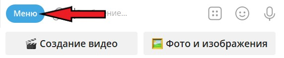

Ниже ты найдешь подробную инструкцию «Как оживлять фото».
Если у вас старая фотография, есть несколько нейросетей, которые точно справятся с этим. У других могут быть проблемы, при которых на самой фотографии не будет движения, она будет просто отдалятся или приближаться.
Если на вашей фотографии есть дефекты, такие как трещины, заломы, пятна и рваные части — рекомендуем убрать их в нашем боте с помощью инструмента «Фото и изображения» → «Улучшение» → «Удаление дефектов».
Первый вариант — Hailuo 2.3 в версиях Std и Pro стоимостью 30 и 42 рубля — делает качественно, но с некоторыми изображениями всё-таки бывают проблемы. Этот вариант по отзывам пользователей меньше всего меняет лица людей.
Второй вариант — Seedance1 в версиях Lite и Pro стоимостью 20 и 30 рублей — обе модели имеют хорошее соотношение цены и качества.
Третий вариант — Runway имеет 2 разных разрешения (размера): 720p или HD за 15 рублей и 1080p или Full HD за 25 рублей. Runway 720p за 15 рублей имеет хорошее разрешение для просмотра с телефона или отправки на видеоплатформы. Если хотите получить большее разрешение, 1080p, тогда цена уже будет 25 рублей, но качество оживления будет таким же, как и у 720p. На данный момент мы не рекомендуем использовать эту нейросеть по причине частого добавления посторонних людей.
Четвертый вариант — Waver 1.0 делает хорошие видео и справляется с любыми изображениями, даже с теми, которые не проходят модерацию в других нейросетях.
Для фотографий хорошего качества самыми продвинутыми являются следующие варианты:
Можно использовать Luma Ray 2 и Luma Ray Flash 2 — они могут сделать зацикленное видео, то есть видео без видимого начала и конца. Также подходят видео на основе первого и последнего кадра. Но для старых фотографий использовать их не рекомендуем.
Что бы пополнить баланс бота, для этого вам нужно использовать команду /pay. Так же вы можете найти её в меню бота (см. на фото ниже).

После нажатия команды выберите сумму и оплатите с помощью надёжного сервиса по приёму платежей Robokassa. Для начала можете пополнить на небольшую сумму.
После пополнения баланса, можно начинать оживлять фотографии. Для этого сначала активируйте нужную нейросеть, нажав на кнопку «🎬 Создание видео», расположенную рядом с полем для ввода текста. Потом в открывшемся меню выберите пункт «Видео из изображений» и в появившемся меню активируйте нужную нейросеть, нажав на кнопку с её названием.
После активации нейросети бот пришлёт вам сообщение о том, что вам необходимо загрузить изображение как файл с подписью, в которой необходимо указать, что должно происходить на видео.
Для отправки фотографии как файл нажмите иконку «Скрепка» рядом с полем для ввода текста, потом нажмите на кнопку «Файл», затем на кнопку «Галерея» и поставьте галочку на нужном изображении, после чего внизу появится поле для ввода подписи.
Если поле для ввода подписи не появилось, отправляйте фотографию без неё — бот объяснит, как добавить подпись к отправленному файлу.
Мы оживили множество фотографий и поняли, какие фотографии лучше всего отправлять, чтобы нейросети было проще выполнить задачу и было меньше глюков:
Не пишите «оживи фотографию», вместо этого напишите, что конкретно должно происходить. Чем проще и понятнее — тем больше вероятность получить желаемый результат, например:
Если вы используете Runway, то у него бывают глюки в виде появления посторонних людей. В таком случае необходимо указать нейросети, чтобы она не добавляла никого лишнего. Вот примеры:
После того как фотография с подписью будет отправлена, запустится генерация видео, и через 3–5 минут вы получите готовый результат.
Надеемся, мы смогли максимально доступно и просто описать как оживлять фотографии, и у вас не осталось вопросов.